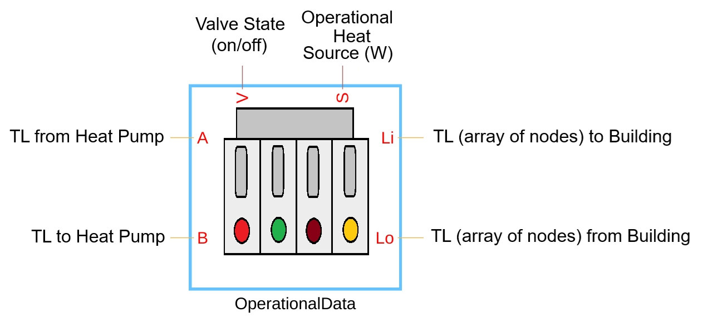

Custom Block: Operational Data
The source code for the block is in the SSC file Components/Building/BuildingHVACOperation.ssc.
Contents
This block is the junction where the bundle of thermal liquid (TL) nodes from Building custom block connect to the TL nodes from the heat pump. This block computes all time varying, room-wise heat sources, and adds them to the respective rooms. The block has 4 ports:
- Ports A and B to connect to TL nodes at heat pump,
- Ports Li and Lo to connect to the Building component and are an array of nodes, with the array node size equal to the Building component array of nodes.
- Output port V specifes valve state, on or off, for each room. If HVAC is not needed in a specific room, its value is set to 0, else 1.
- Output port S specifies heat source for each room.
Operational Data
- Building Operational Parameter Matrix, opsParamBldg, specified as a matrix, defines the different operational parameter states in the building. The matix has 7 columns and rows equal to total number of hours the simulation runs for. The first 3 data points represent the building Level, Apartment Number, and the Room Number for which the data is populated across the row. The fourth Column represents HVAC requirement. A value of 0 represents no demand for HVAC. A value of 1 represent the need for HVAC. The 5th and 6th data points represent additional Heat Load and Electrical Power load in Watts. The 7th data point represents the number of people in the room or the room occupancy level.
Each row is a snapshot of time for a unique room. The Heat Load and the Electrical Power load are added to provide an overall heat load to the room. The valves are closed or opened based on HVAC requirement.
Other Variables
- Heat Per Occupant, heatPerOccupant , specified as a scalar value, defines the amount of heat source added to the room due to presence of one or more humans in the room at a given point of time. The number of people present in a room at different points of time is given by the parameter opsParamBldg.
